K-01 風道退出牆體
55cm淨洞＋5cm後風道、底進氣及頂部前向排氣已入模；廚房檯面間淨距83.5cm。
這次發現的問題包括孤立木片、穿進書架的公仔、實心玻璃櫃與板件穿牆。已修正能確認的模型錯誤；風道、滑鏡、收藏室內側與旋轉背殼已進一步實作，詳見最新前後對照。
圖片是實際模型的比例／配色檢視，不是寫實效果圖或瀏覽器截圖。
使用CPU繪製來源網格，省略貼圖、反射和真實光照。白螢幕、窗外底色及粗略表面不能當成材質故障證據；更衣室仍有視角遮擋。瀏覽器實畫與材質接縫驗收尚未完成。
55cm淨洞＋5cm後風道、底進氣及頂部前向排氣已入模；廚房檯面間淨距83.5cm。
室內面改成連續淺霧灰，比在黑櫃之間再加裝飾条更有效；保持40cm外深與廚房齊平。
完整58cm滑鏡可向右側移50cm；有導軌、吊掛、止擋與開關。
整理成一致的金屬檢修面、規律散熱區與固定底座走線；先核機構，再決定封板分割。
玄關／展示櫃先统一色相與接縫；廚房統一封板頂線；浴室將玻璃、石材與鏡面接口畫清楚。
原畫面的單片木色不是有意義的材料轉折；已修正覆寫來源，四版統一櫃面色，保留玻璃櫃深度與對齊。
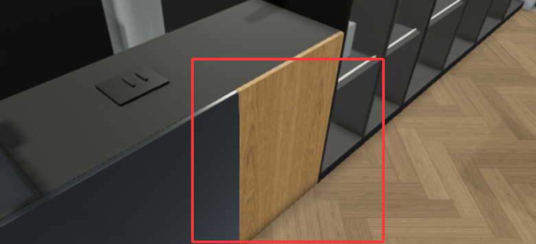
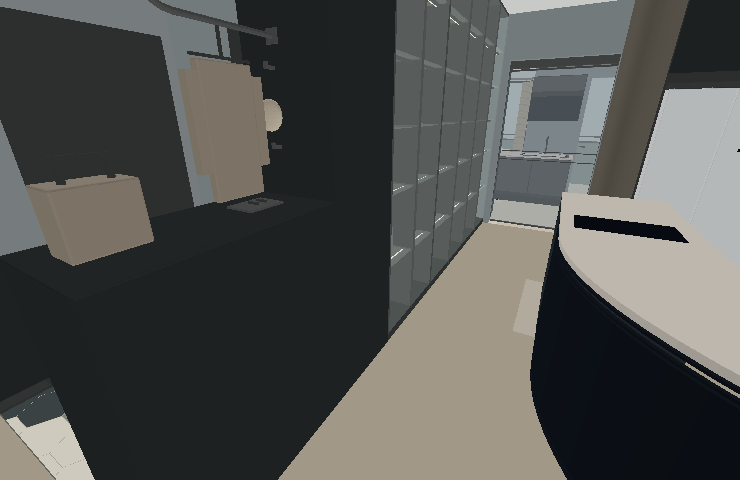
你指出的單片木色封板確實破壞連續性。來源是寫實材質程式按名稱把指定的黑色封板重新套成木紋，並非合理的異材質設計。另發現收藏室門頂裝飾封板與高櫃交疊。
四版櫃身與客廳面統一石墨灰霧面；排除後續木紋覆寫。移除突出亮條，兩片封板以2mm接縫、0.5mm小倒角交接。收藏室門頂封板縮至門片厚度，不再穿進高櫃。 最新材質選擇：地坪改米白／灰階六角磚，暫定對邊25cm、2mm暖灰縫；客廳及收藏室門口採4mm齊平金屬收邊。
維持玻璃、石墨灰櫃面與檯面的三種材料，各自成段。V1／V3高櫃量體較重；V2／V4較通透，但側掛衣物仍是視線焦點，適合少量短外套，不宜掛滿。
玻璃框与木作側封板的固定、門縫五金仍為示意。材質紋理、反射與亮暗接縫要在實際3D重新整理後驗收。
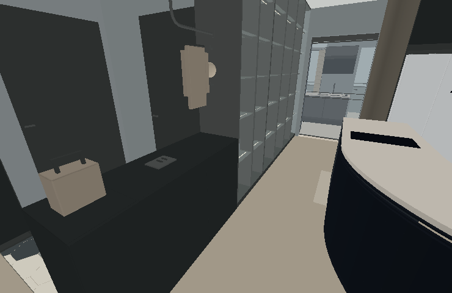
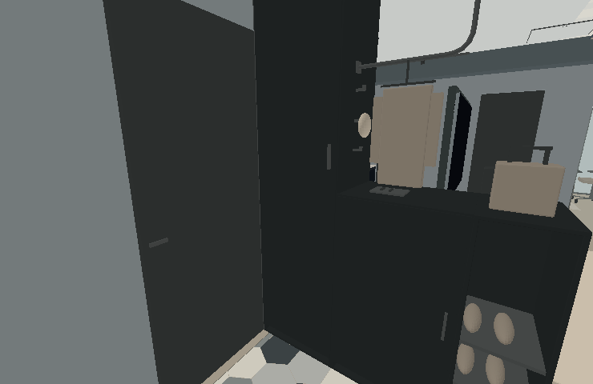
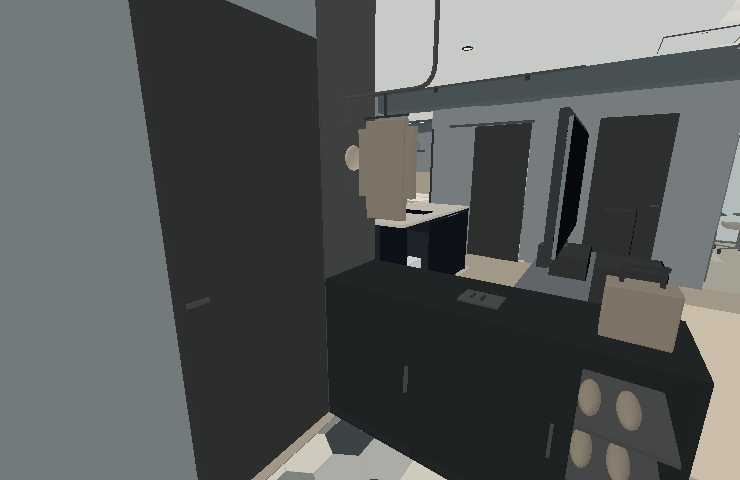
設備已按家具表分成固定電視與旋轉電視兩組。兩顆SVS是清單中的配置；耳平環繞的落地架已有支承。視覺上喇叭、支架、背殼與高櫃形成多組黑色直線。
V3／V4保留已修正的後置支承，背殼改中央整片石墨灰金屬面、上下174cm同寬水平通風带，固定下立柱增加可拆走線罩。貴妃椅坐墊與雙SVS保留。
將檢修面、散熱帶與下方走線整理成同一套金屬語言。模型进氣淨開孔730.8、排氣1078.8cm²，均大於舊版；不是封死背面換取平整。
旋轉電視的194×116cm背殼仍有明顯量體；支架、限位及活動線材不是正式五金圖。沙發外徑與實際音響站位未定，不能視作完整動態驗收。
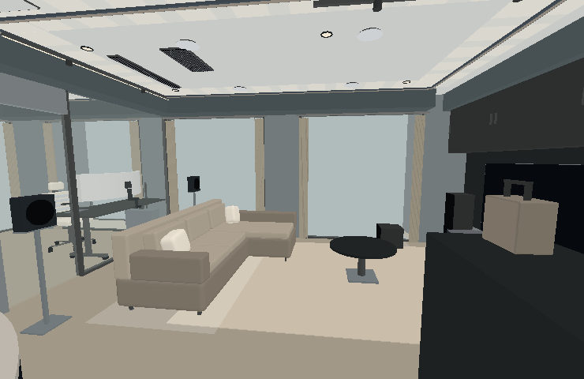
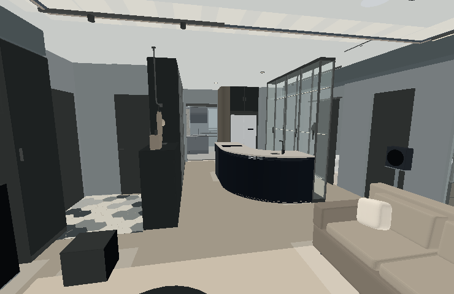
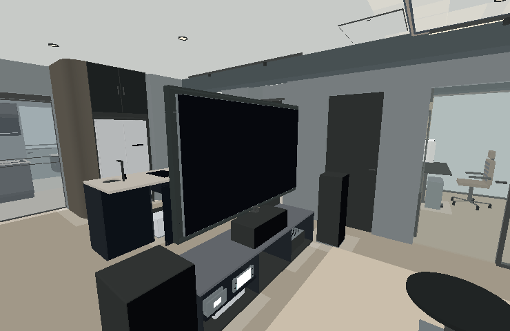
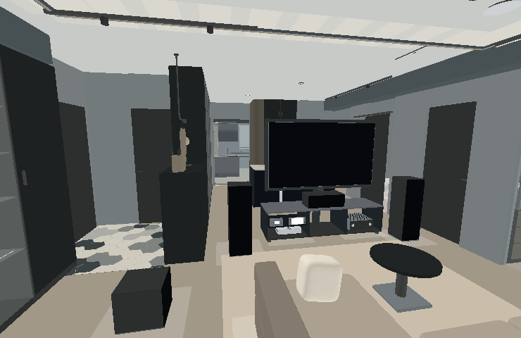
曲線版外側背板、直線版設備分艙先前已補齊。本次另找到展示層板燈帶貼在上緣外露，會形成零碎亮線。曲線版頂天雙面櫃仍是公領域最強的視線分隔。
一般展示櫃、雙面櫃與書房櫃的燈帶改到層板下方，補黑色遮光收邊。四版保持95cm檯高、酒櫃與掃地機朝冰箱開口；沒有挪動展示櫃或擴大島內側。
曲線版保留展示功能，先讓玻璃框、棚板與燈帶形成同一套線條；只亮展示物而非每條框。直線版應把設備檢修縫與板件分艙對齊，東側留膝區和外殼維持完整。
獨立式酒櫃放進開放設備艙的通風尚待核定；給排水、漏水檢修與固定方式仍缺正式路徑。V3／V4旋轉電視時旁邊動線不能同時當作通行空間。
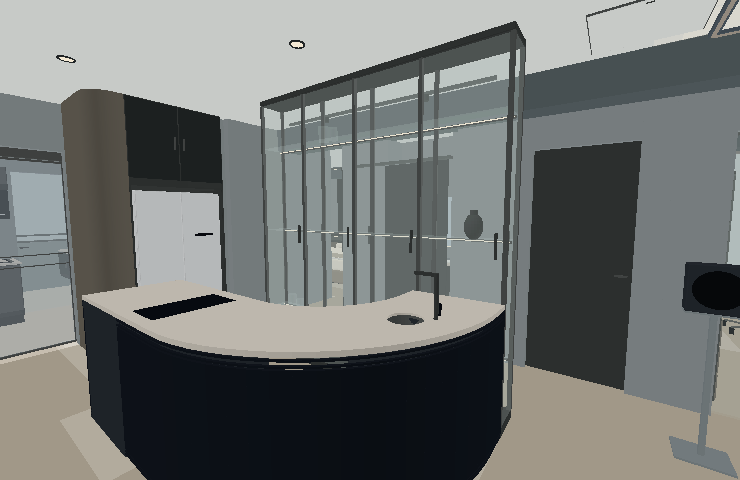
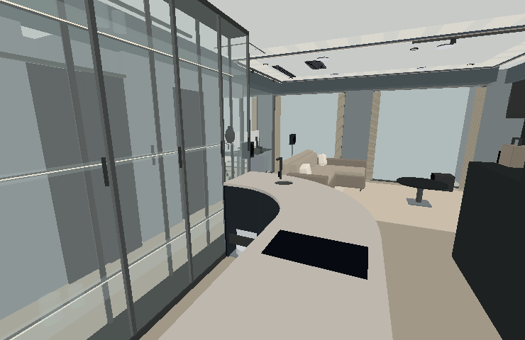
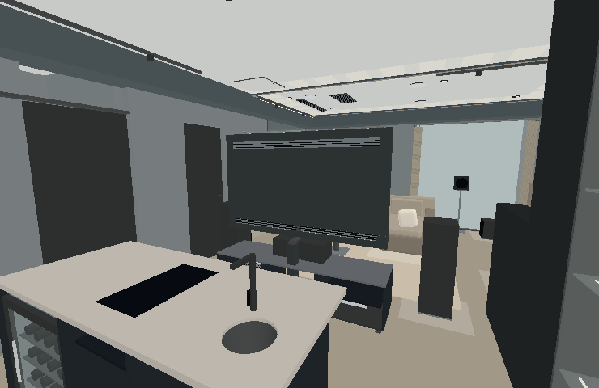
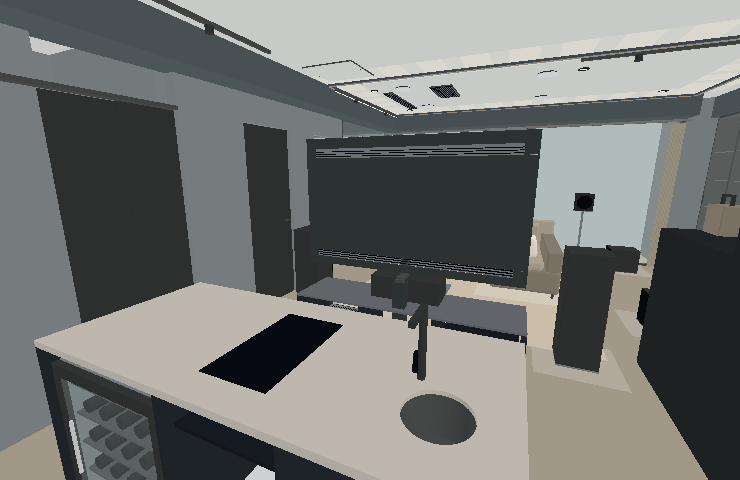
上掀玻璃櫃背後原本仍是實心方塊，部分踢腳缺漏。B區檯面、層架與抽屜背部伸進東牆5cm；C區高櫃背部伸進北牆1cm。另有K-01：內嵌冰箱5cm後風道與牆完全重疊。
內嵌冰箱55cm淨洞位於x150–205，5cm風道位於x205–210，全部在牆外；新增下方進氣與上方前向排氣箱、兩片真開孔格柵。相鄰下櫃前緣對齊，櫃頂補2.3cm封板收到240cm。 最新材質選擇：本區既有木色櫃面已改深灰棕直紋霧面木皮，四版共用；詳細色樣及排磚見「材質調整.html」。
冰箱櫃、下櫃完成面與頂部封板一併整理；廚房檯面間淨距85→83.5cm，保留中島南側與展示櫃位置。排氣回到廚房，避開封閉天花。
K-01模型穿牆已解決。台灣110V供貨版、實作格柵開孔與安裝仍須廚具商確認；廚房水槽細節和門機實品公差另依既有待確認項目。
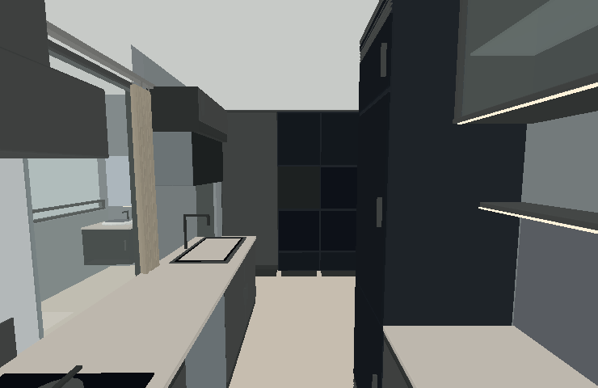
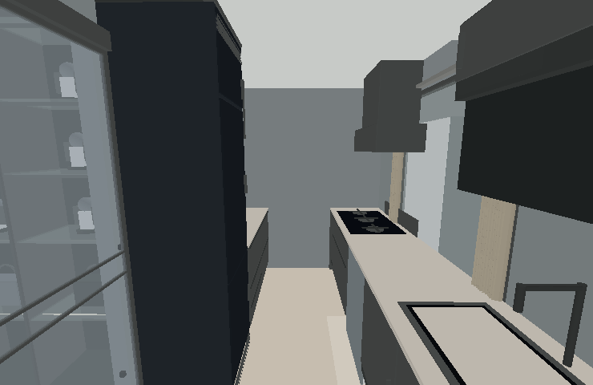
展示櫃最上層三個公仔穿進185cm以上的書架；九抽櫃底部缺踢腳，玻璃棚板照明外露。
183cm層板作上封板，不再放會越過185cm的公仔；下方三排展示保留。補抽屜櫃8cm內縮踢腳、層板下燈與遮光條。 最新材質選擇：本區既有木色櫃面已改深灰棕直紋霧面木皮，四版共用；詳細色樣及排磚見「材質調整.html」。
下方木色九抽櫃是一整段基座，與玄關孤立木片不同，可以保留。建議漫畫、展示公仔與抽屜的垂直分格對線，螢幕後方走線集中於桌下線槽。
椅子160°後仰與升降桌／支架極端角度沒有完整實品包絡；主機、插座與窗簾同時使用仍需核對。離線圖中的白螢幕未繪製貼圖，不能用來判斷螢幕材質是否壞掉。
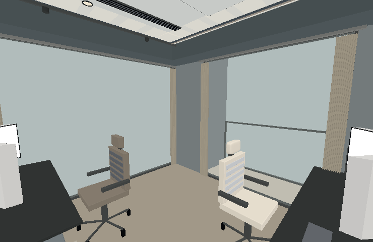
床架落地支承已補，床頭左右高櫃与木色抽屜的組合成立，但兩側頂天量體與投影機層板集中在床頭，視覺較重。
保留床、投影設備外包絡及既有床位，核對共用幾何。沒有用縮小床來增加走道。 最新材質選擇：本區既有木色櫃面已改深灰棕直紋霧面木皮，四版共用；詳細色樣及排磚見「材質調整.html」。
床頭兩側封板、抽屜頂線與床頭板宜整合；投影機層板可做與牆同色的薄型支承，電線回到後方檢修槽。保持機器通風，不能為了藏機器把它封死。
床架外徑未選定；投影機目前以92吋有效畫面放樣，98吋滿版仍不能承諾。床頭與幕盒的實際貼圖、眩光未验收。

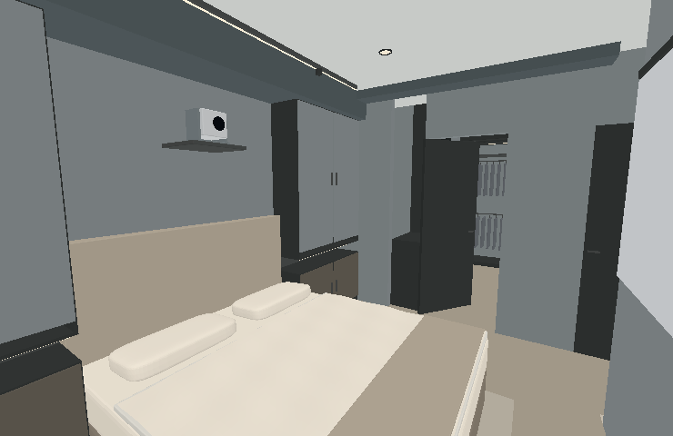
衣物示意模型與吊桿間缺連接件。南側全身鏡覆在開放吊衣段的前面，鏡面、衣物與層架看起來互相遮擋，A／B視角也無法清楚看完整座櫃。
移除原固定鏡片，改58cm寬完整滑鏡、上下110cm導軌、吊掛、拉手與止擋。向右滑50cm，櫃內衣物可從左右分區取用；側欄有移開／移回按鈕，也可在步行按E。
鏡面成為可使用的櫃前滑動構件，鏡子移開後露出原本被遮住的掛衣區；不占用獨立的平開門弧。
51個滑动位置通過模型碰撞檢查。鏡片重量、吊輪承載與管道實測仍依正式五金圖；此處反射需要在實際3D驗收。
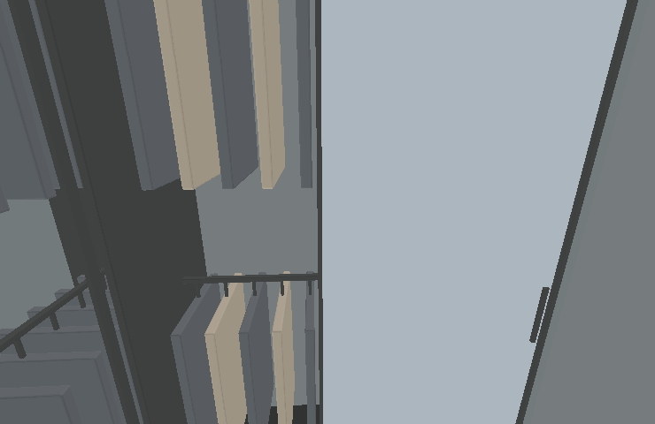
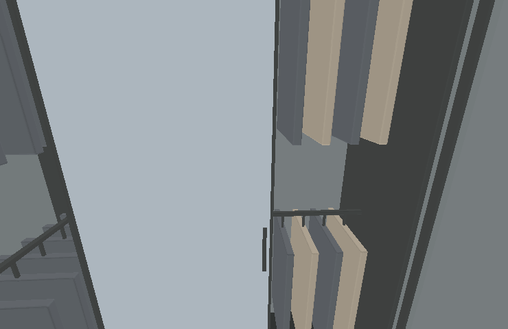
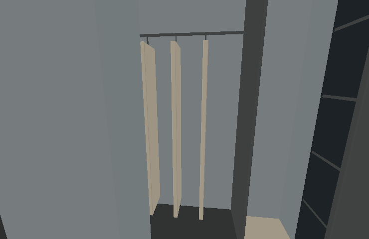
對客廳的展示面成立，但收藏室內部看到大面深色櫃背與行李櫃，窄房間容易像黑色通道。不能只看客廳正面就算完成。
公共展示櫃內側增加原厚度內的3mm淺灰面層；行李櫃門及精品包櫃背一起整理。原40cm櫃外深、y753客廳面與y793室內面不動。
室內看到連續淺灰面與一致分縫；公共展示面保留黑色背板與金屬框，仍是原本的展示效果。
面層已在模型完成。實際板材與色樣待確認；公仔底座、約36cm棚板及玻璃承載仍應逐件核對。


浴缸、馬桶與淋浴玻璃外包絡已有相對位置；玻璃框、浴缸邊及牆地交接仍是簡化幾何，部分面盆以示意形體表達。
本輪沒有另改衛浴配置，保留已更新設備尺寸。
玻璃門五金、鏡面及石材的邊線宜集中；地坪、淋浴玻璃下緣與浴缸旁不要各自出現不同寬度的收邊。鏡燈宜照人，避免只在上緣畫亮線。
排水坡度、濕區止水、玻璃槽、矽利康縫與真正面盆開口未形成可製作細節；這些不是本輪幾何通過就代表有完成。
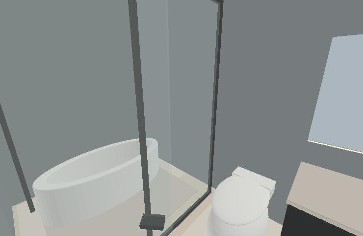
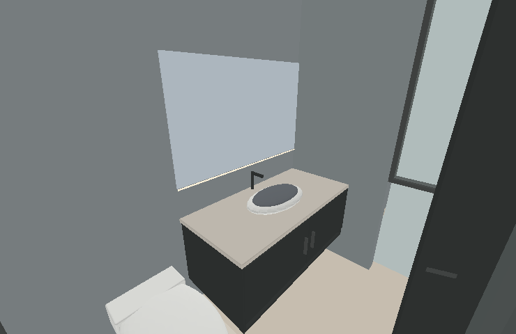
小空間的門、鏡、盆與馬桶很集中；外掛雙聯滑門是提案，家具表與模型的房間內徑尚不一致。
保留既有LS設備外包絡與滑門模型，共用幾何和門控制回歸。
建議鏡面與洗手台以同一中心線收齊，門框與鏡框用同系金屬；減少小房間中不同色邊條與凌亂轉折。
必須先確認房間內徑、排水及門片收納範圍，才可定門框與鏡櫃深度。面盆、龍頭、濕區接口仍屬簡化模型。
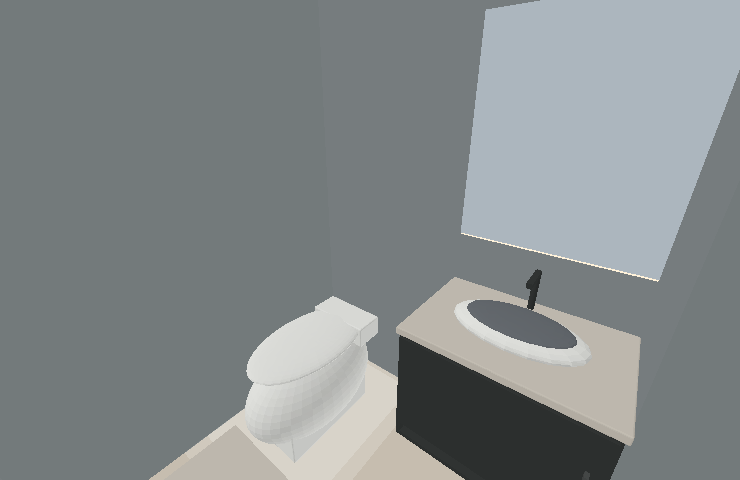
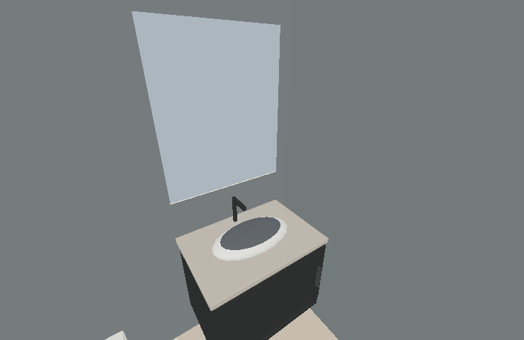
層架有立柱落地，層板與立柱連接成立；內部物品多為代理方塊，不能據此說實際收納全部能放下。
本輪保留現有層架與收納物，不另改深度。
統一收納箱尺度、保留常用物的視線高度；只在靠走道側做整潔端板，不必把小房間全部包成深色高櫃。
清潔用品、梯子、備品尺寸與層板承載仍要整理；門打開時的取物路徑未逐件模擬。
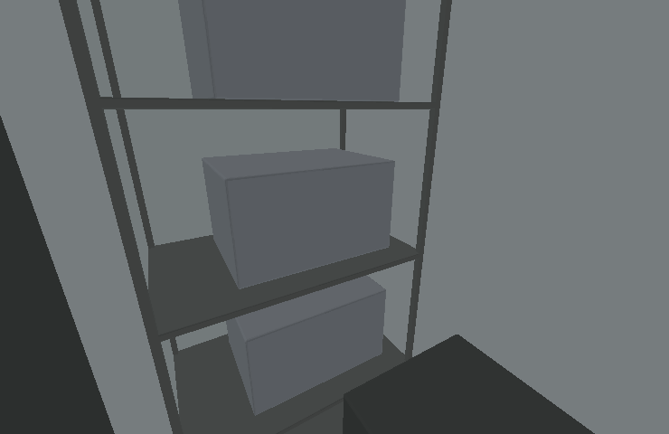

洗衣塔、室外機及工作盆已有外形與支承；管線、閥件及檢修動線仍未形成完整設備立面。
本輪保留70×77×189cm洗衣塔與既有落地支承，確認共用模型一致。
設備立面優先以可拆的同色管線槽整理，不把所有機器封成木櫃。門窗下緣、工作盆檯面與側板收邊要對齊完成面。
77cm是機身深，不含後接管；室外機機型、排氣、維修站位與洗衣門打開後通行仍需聯合核對。


两房6個冷氣端末、6組窗簾，以及兩房5種RGB效果完成幾何和控制回歸。已補展示層板下的遮光條，並維持窗軌、RGB避梁；仍需整合實際空調機型、管路、燈槽散熱與檢修尺寸。
下一層細節是櫃頂封板、牆地踢腳、窗框密封、石材對紋、玻璃與石材止水接口。這些沒有全部畫成施工細節，不應用「網格有效」代替完成面驗收。
九個共用房間比對幾何、網格及材質指紋，四版一致；玄關高矮與两種中島／電視配置分開檢視。四版各24件設備重跑既有包絡與選定動態測試。
| 版本 | 網格 | 玄關同色面 | 櫃面可見射線 | 九區共用資料 |
|---|---|---|---|---|
| V1 | 2050 | 21 片 | 10 條 | 相同 |
| V2 | 2048 | 20 片 | 10 條 | 相同 |
| V3 | 2032 | 21 片 | 10 條 | 相同 |
| V4 | 2030 | 20 片 | 10 條 | 相同 |
玄關材質另測試貼圖延遲回調，確認不再被木紋規則覆蓋。已檢查的櫃組與實牆重疊候選修正後為0，但這不包含所有管線、所有物件或所有開啟狀態；K-01風道衝突已改為牆外貫通風道，9條通氣路徑射線與櫃板／牆體檢查通過。
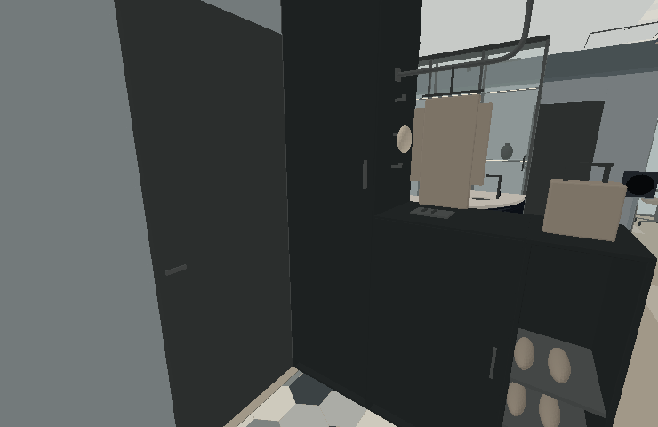
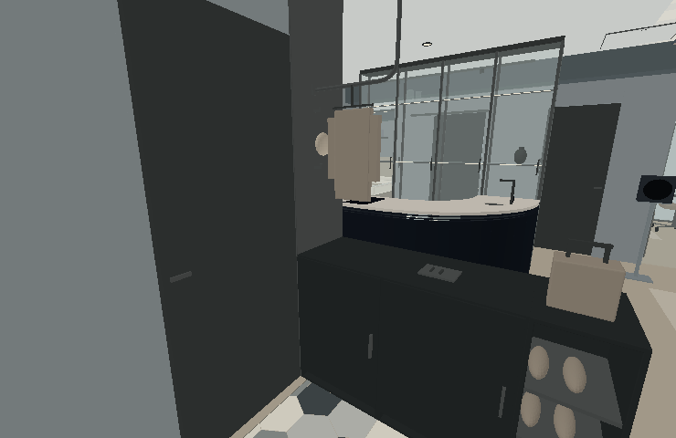

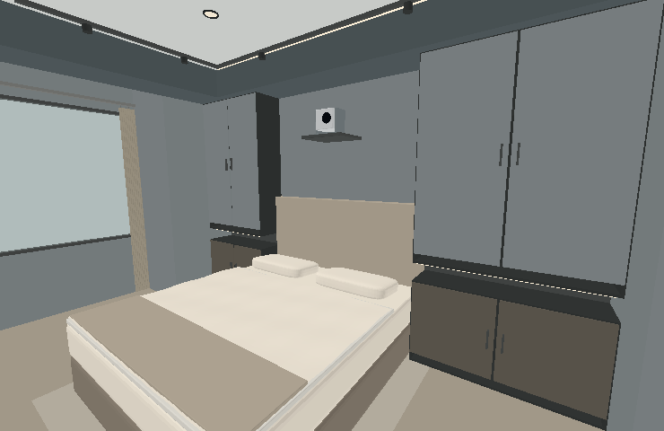

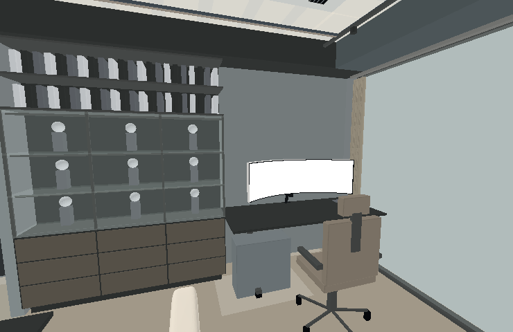
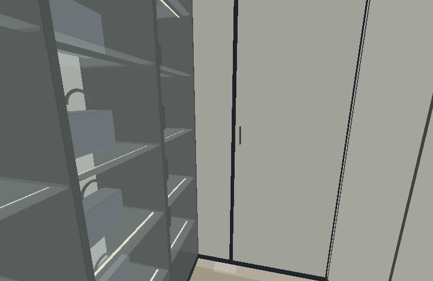


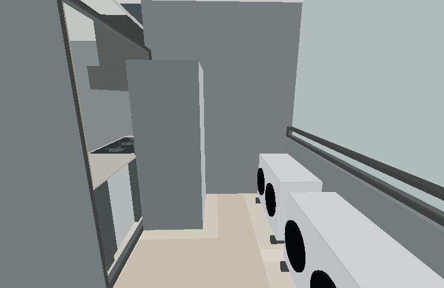


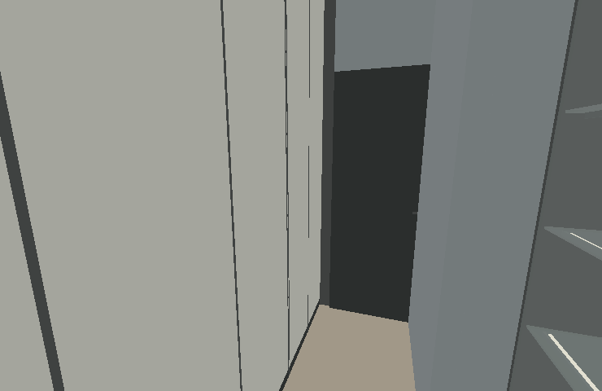


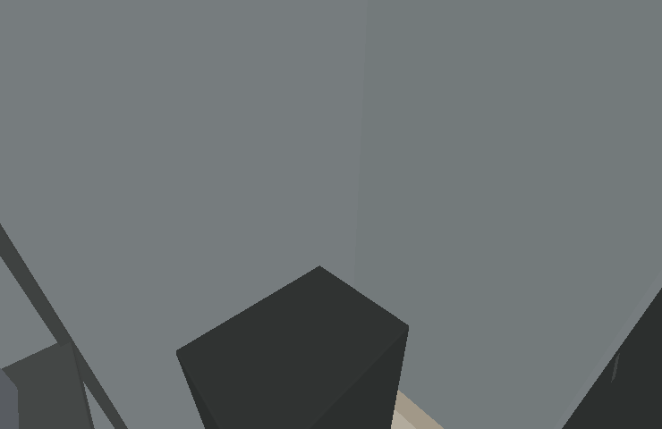
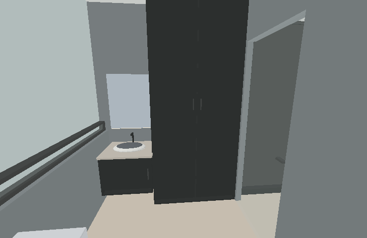
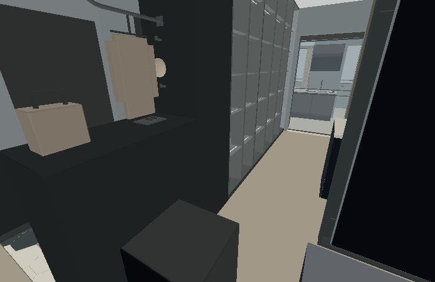
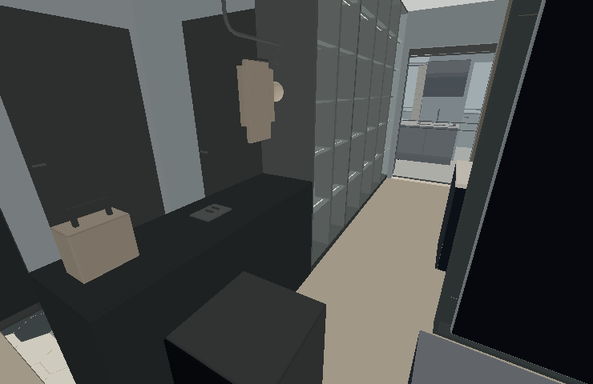
{kind=link}
{kind=link}
{kind=link}
{kind=link}
{kind=link}
{kind=link}
{kind=link}
{kind=link}
{kind=link}
{kind=link}
{kind=link}
{kind=link}
{kind=link}
{kind=link}
{kind=link}
{kind=link}
{kind=link}
{kind=link}
{kind=link}
{kind=link}
{kind=link}
{kind=link}
{kind=link}
{kind=link}
{kind=link}
{kind=link}
{kind=link}
{kind=link}
{kind=link}
{kind=link}
{kind=link}
{kind=link}
{kind=link}
{kind=link}
{kind=link}
{kind=link}